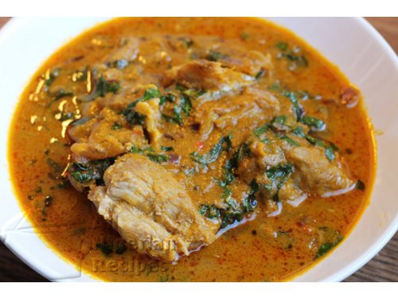

Banga Soup

Description
Nigerian Banga Soup or Ofe Akwu is native to the Niger Delta and the South
Eastern parts of Nigeria. In the Niger Delta areas, Banga soup is commonly
eaten with various fufu recipes: Starch, Pounded Yam, Semolina, Garri and
Cassava Fufu. In the South Eastern parts of Nigeria, Banga Soup is
referred to as Ofe Akwu where Ofe means Soup / Stew and Akwu means palm
fruit and is used mainly as stew for boiled rice
Ingredients
- A 1kg Palm fruits or 800g tinned palm fruit concentrate
- Beef
- Dry Fish
-
Vagetable: Scent leave for ofe akwu or dried and crushed bitterleaves
for Delta-style Banga Soup
- 2 medium onions
- 2 tablespoons ground crayfish
- Salt and Chilli Pepper (to taste)
- Ogiri Okpei (Iru)
- 1-2 big stock cubes
Cooking Directions or Steps
-
Set the pot of palm fruit extract on the stove and start cooking at high
heat. Leave to boil till you notice come red oil at the surface of the
Banga Stew. If you think that the Banga Soup is watery, cook till the
soup has thickened to the consistency you like for your stews.
-
Now, add the beef, dry fish and stock, the onions, crayfish and pepper
and leave to boil very well.
-
Add the scent leaves or other vegetable and salt to taste. Leave to
simmer for about 2 mins.
-
When the beef and fish are well done, add the palm fruit concentrate and
add water to get the consistency you like for your stews. Leave to boil
very well.
-
Add the scent leaves or other vegetable and salt to taste. Leave to
simmer for about 2 mins. The Banga Soup is done.
Return To Home